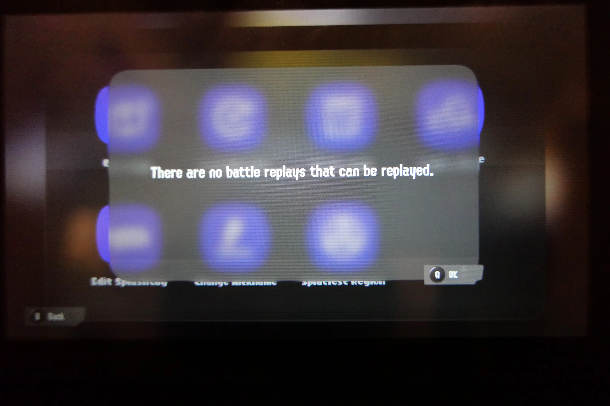

Splatoon 3 Deletes Replays After an Update
Fun fact: Just like Smash Ultimate and Smash 4, Splatoon 3 will delete all your replays after an update! And unlike the Smash games, there is no way to save them before they're deleted! Wow!
I set up my tripod and camera above my switch to record my replays and preserve them that way, but this photo is all I have for my efforts. Once an update is available, Splatoon 3 will not let you enter the lobby without updating, after which your replays will be deleted.